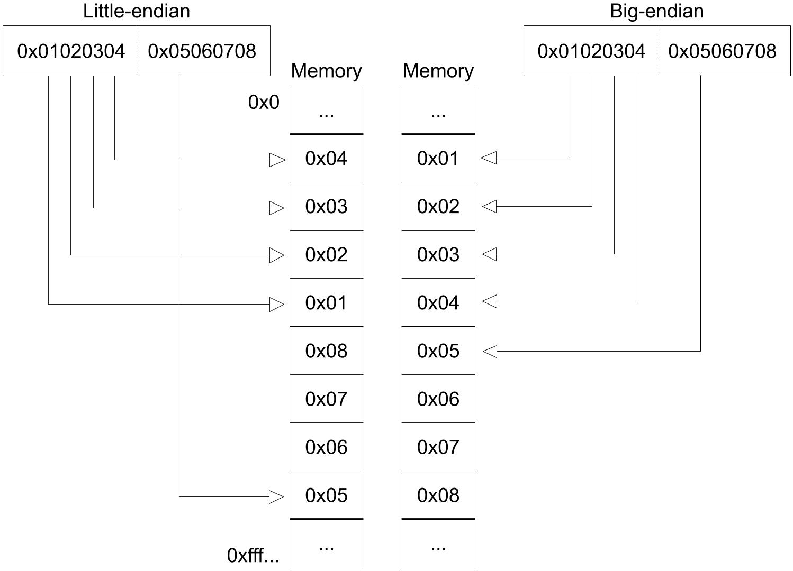
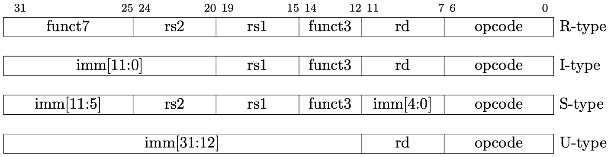
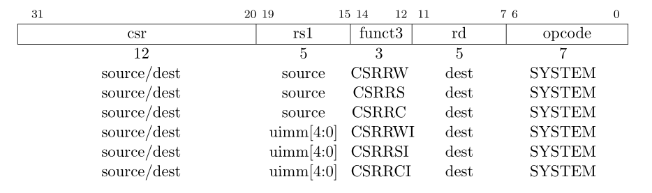

Rare: Rust A RISC-V Emulator
RISC-V 模拟器教程
This tutorial is based on Asami's excellent tutorial. Although the author haven't finished it, she have already separated the code into 10 stages, which makes this tutorial become possible.
When you complete this tutorial, the emulator is able to run xv6, a UNIX-like operation system running on RISC-V.
I am planning to follow her code build the emulator step by step. When finished, I will write a complete tutorial to help reader to get the details. My tutorial will use the same tool mdbook as the original author, to build.
- Project: Github Rare
- Tutorial: Github.io Rare
本教程基于Asami 所写的模拟器教程。虽然作者只写到第三章，但她已经事先将所有的代码划分成了十个章节。所以看着代码也能够一步一步地构建出这个模拟器。
最终的模拟器可以运行 xv6 操作系统。
我的计划是：跟着她的代码和教程一步一步地做出这个模拟器，然后写一个系列完整的中文教程加以说明。该教程与原作一样，使用mdbook构建。
- 项目地址：Github Rare
- 在线教程：Github.io Rare
Prerequisite
前置
This tutorial assumes readers already have been familiar with Rust and RISC-V. If not, you might want to read the following materials to learn about RISC-V.
本教程假设读者已经对 Rust 和 Riscv 有一定的了解，因此教程中不会对 Rust & Riscv 作过多的解释，而是专注于模拟器本身。推荐通过阅读以下资料来了解 Riscv。
For Rust, you can read the book after you have installed the toolchain. Open your terminal and type rustup docs, your browser will open a new page for you to navigate to the book and other docs.
至于 Rust，安装好环境之后，可以通过运行 rustup docs 来访问the book以及 Rust 文档。
Develop envrionment
开发环境
- Linux / WSL
We nned the clang toolchain to generate some files used in testing. You can download the precompiled version from here. The version I used is clang-12.
我们需要用到 clang 的工具来生成测试的二进制文件，可以从LLVM官网下载预编译版本。我使用的版本是 clang-12，更新的版本应该也可以。
How to use
- clone this project
- use
cd Rare/book && mdbook serveto open this tutorial locally - use
git pullto update when needed
推荐的使用方法
- clone 该项目到本地
- cd Rare/book && mdbook serve 打开本地教程
- 需要的时候，使用 git pull 更新
Catelogue
目录
- Adder 加法器
- Memory and Bus 内存和总线
- Control Status Register 控制状态寄存器
- Privilege Mode 特权模式
- Exception 异常
- PLIC & CLINT
- UART
- Interrupt 中断
- Virtio
- Page Table 页表
The original author separate the tutorial into two parts: Hardware and ISA. I have merged them here.
原作者划分了硬件和 ISA 指令集两部分内容，我觉得合并成一个更适合，所以进行了合并。
Note
When you travel through this tutorial, sometimes, you may notice some code in current chapter is different from last one's. This is because I will do some refactor when needed. Welcome to open an issue on github if you have any questions.
实践的过程中，读者可能会发现本章的部分代码与上一章的不一样。这是因为我在编写的过程中会适当地进行重构。如有任何疑惑，欢迎在项目上提 issue。
Adder
CPU (Center Process Unit) is one of the core components of a computer. But in this chapter, we will use CPU to denote the whole computer, including 32 common integer registers, a program counter register and a DARM (dynamic random-access memory). In next chapter, we will use bus to connect memory and CPU.
This chapter corresponds to the first chapter CPU with Two instructions of the original tutorial by Asami. When finished, our CPU is able to run two instructions: add and addi.
CPU 指中心处理单元（Center Process Unit），是一块小小的芯片。它是计算机（computer）最核心的部分。
不过，为了简单起见，第一节的 CPU 代指的是整个计算机，它包含了 32 个通用寄存器、一个 PC 寄存器和一块内存。在下一节，我们会将内存移出 CPU。
本节对应原作者的第一节，CPU with Two instructions。这一节的 CPU 只能执行 add 和 addi 两个指令。
1. Basic CPU
Let's define our CPU as follow: It consist of a 64-bit pc register, 32 64-bit integer registers and a DRAM as a vector of u8.
首先定义 CPU 的结构，它包括一个 64 位的 PC，32 个 64 位的通用整数寄存器以及一个用 u8 向量表示的内存。
main.rs
struct Cpu {
// RISC-V has 32 registers
regs: [u64; 32],
// pc register contains the memory address of next instruction
pc: u64,
// memory, a byte-array. There is no memory in real CPU.
dram: Vec<u8>,
}
We need to define the size of memory to initialize our CPU. Since the stack pointer register sp (aka x2) should point to the top address of DRAM. We initialize the pc to 0, means we will start fetch instruction from address 0.
我们需要定义内存的大小来初始化 CPU，因为栈指针 (SP) 需要指向栈顶（内存的最高地址），同时，我们将 PC 置 0，意味着我们的程序将从内存地址 0 处开始执行。
main.rs
// init memory as 128MB
pub const DRAM_SIZE: u64 = 1024 * 1024 * 128;
struct Cpu { ... }
impl Cpu {
fn new(code: Vec<u8>) -> Self {
let mut regs = [0; 32];
regs[2] = DRAM_SIZE - 1;
Self {regs, pc: 0, dram: code}
}
}
2. CPU pipeline
Modern CPU spills its execution procedure into several stages to improve throughput and performance. Here is the classic MIPS five-stage pipeline. It consists of:
- fetch: fetch instruction from memory according to the value of
pcregister. - decode: decode instruction so the CPU knows how to execute it.
- execute: do some computation and get the result.
- memory access: store value into memory if necessary.
- write back: update PC and register file.
CPU do such things again and again.
现代CPU通过将其工作流程划分成多个子过程，以提升其吞吐量和性能。经典的 MIPS 流水线架构包含以下五个部分
- 取指：根据
pc值读取内存中的指令 (fetch) - 解码：解码指令 (decode)
- 执行：执行指令 (execute)
- 访存：将结果写回内存 (memory access)
- 写回：将运算结果（包括新的PC值）写回寄存器 (write back)
周而复始。

classic MIPS Pipeline
3. Instruction fetch
Let's implement the fetch stage firstly.
首先是取指的实现。
main.rs
impl Cpu {
// ...
fn fetch(&self) -> u32 {
let index = self.pc as usize;
let inst = self.dram[index] as u32
| ((self.dram[index + 1] as u32) << 8)
| ((self.dram[index + 2] as u32) << 16)
| ((self.dram[index + 3] as u32) << 24);
return inst;
}
}
CPU use pc as a base address to fetch 4 continous bytes from DRAM, since RISC-V instruction is 32-bit. Here, we read the u8 on [pc, pc+1, pc+2, pc+3] and build up a u32. What we should be careful is the endianness, which is the term refers to how binary data is stored. There are two types of endianness: little-endianness and big-endianness.
For a multi-byte value, little-endianness stores the least-significant byte at the lowest address and the most-significant byte at the highest address, while big-endianness does the opposite.
In our emulator, we will adopt little-endianness. Although RISC-V supports endianness settings for memory operation, instructions are uniformly little-endian for the benefit of both hardware and software. See RISC-V-Privileged section 3.1.6.4.
CPU 将pc的值发送给内存，内存返回对应的地址上的值。由于 RISC-V 指令是 32 位的，因此，内存需要读取的是 [pc, pc+1, pc+2, pc+3] 这四个地址上的值，并组合成一个 32 位的指令。这里有一个大端字节序 (big-endian) 与小端字节序 (small-endian) 的问题。
小端字节序指的是，一个由多个字节组成的数，它的最低位字节存储于内存中的低地址处，最高位字节存储于内存中的高地址处。大端则与之相反。
在本实现中，我们采用小端字节序。在 RISC-V 标准中，指令读取是小端字节序，而内存的加载和储存（memory load and store）则可以通过设置mstatus寄存器上特定的位来控制字节序。

Picture from original author
4. Instruction decode
The next stage is instruction decode. In real hardware with pipeline, decoding is a separate step. CPU will fetch next instruction while decoding the current one. But in our emulator, we will simpify these stages by merging decode stage, execute stage and memory access stage into a function execute.
There are four basic encoding format in RISC-V. (There are six if we count for the another two variants.)
读取指令后就要进行解码。在实际的硬件中，解码是一个独立的步骤，芯片会同时读取和解码多个指令 (pipeline parallel) 以提高运行速度。但在我们的模拟器中，一次只读一个指令，可以将这两部分合并在一起。
我们先看解码过程。Riscv 目前有四种基本的指令编码格式（包含变体共有6种），

Picture from original author
现在我们的 CPU 只执行add、addi，它们的功能说明和指令格式如下：

Picture from RISC-V Reader
Designers of RISC-V choose the encoding types carefully to simplify hardware design. All the instructions are 32-bit and the register index is encoding into the same position of different type, which explains why the immediate is spilled into several part in some type.
When implementing, we can firstly decode the instruction as R-type, then decode other information in specific context when necessary. For example, we will decode imm of addi in its decoding branch.
RISC-V 的设计者出于简化硬件的考虑，将所有的指令编码设计成整齐的 32 位长度。寄存器的编码也尽可能地位于相同的位置，这也是为什么立即数会被切分成多个部分进行编码的原因。
因为各个指令格式都有相同的部分，我们不妨先按 R-type 进行解码。对于其他的类型，则在其具体的分支中进一步解码。比如说，addi的imm将会在它的处理分支中进行解码。
main.rs
impl Cpu {
// ...
fn execute(&mut self, inst: u32) {
// decode as R-type
let opcode = inst & 0x7f;
let rd = ((inst >> 7) & 0x1f) as usize;
let rs1 = ((inst >> 15) & 0x1f) as usize;
let rs2 = ((inst >> 20) & 0x1f) as usize;
let funct3 = (inst >> 12) & 0x7;
let funct7 = (inst >> 25) & 0x7f;
// x0 is hardwired zero
self.regs[0] = 0;
// execute stage
match opcode {
0x13 => {
// addi
let imm = ((inst & 0xfff0_0000) as i64 >> 20) as u64;
self.regs[rd] = self.regs[rs1].wrapping_add(imm);
}
0x33 => {
// add
self.regs[rd] = self.regs[rs1].wrapping_add(self.regs[rs2]);
}
_ => {
dbg!(format!("Invalid opcode: {:#x}", opcode));
}
}
}
}
Here, we use wrapping_add insteal of + because RISC-V ignore arithmetic overflow.
Now, our CPU is almost finished. We provide a function to help us to inspect the status of our CPU.
这里，我们使用 wrapping_add 的原因在于，这两个指令忽略算术溢出错误(arithmetic overflow)，溢出的位(bit)会被直接丢弃（见上面关于这两个指令的说明）。
CPU 的功能基本上完成了。但我们需要能够方便地查看寄存器的状态，以便验证 CPU 是否正确执行了指令。
main.rs
const RVABI: [&str; 32] = [
"zero", "ra", "sp", "gp", "tp", "t0", "t1", "t2",
"s0", "s1", "a0", "a1", "a2", "a3", "a4", "a5",
"a6", "a7", "s2", "s3", "s4", "s5", "s6", "s7",
"s8", "s9", "s10", "s11", "t3", "t4", "t5", "t6",
];
impl Cpu {
// ...
pub fn dump_registers(&mut self) {
println!("{:-^80}", "registers");
let mut output = String::new();
self.regs[0] = 0;
for i in (0..32).step_by(4) {
let i0 = format!("x{}", i);
let i1 = format!("x{}", i + 1);
let i2 = format!("x{}", i + 2);
let i3 = format!("x{}", i + 3);
let line = format!(
"{:3}({:^4}) = {:<#18x} {:3}({:^4}) = {:<#18x} {:3}({:^4}) = {:<#18x} {:3}({:^4}) = {:<#18x}\n",
i0, RVABI[i], self.regs[i],
i1, RVABI[i + 1], self.regs[i + 1],
i2, RVABI[i + 2], self.regs[i + 2],
i3, RVABI[i + 3], self.regs[i + 3],
);
output = output + &line;
}
println!("{}", output);
}
}
5. Testing
Here, we will simply validate our implementation by executing a pure RISC-V binary. Create a file add-addi.s and append the following code.
我们通过执行一个 RISC-V 二进制文件来验证我们的实现。
创建add-addi.s，写入以下内容
addi x29, x0, 5
addi x30, x0, 37
add x31, x30, x29
We run the following command to generate the pure RISC-V binary, aka the binary file without any header.
生成 RISC-V 二进制文件
clang -Wl,-Ttext=0x0 -nostdlib --target=riscv64 -march=rv64g -mno-relax -o add-addi add-addi.s
llvm-objcopy -O binary add-addi add-addi.bin
At the same time, we need some code to read data from the binary file add-addi.bin. Then we initialize our CPU with the code and execute every instruction in it. Finally, we dump out the register information and exit.
同时，模拟器需要读取add-addi.bin的内容，并初始化一个 CPU 实例。CPU 逐个读取和执行每个指令，最后打印寄存器状态。
main.rs
use std::env;
use std::fs::File;
use std::io;
use std::io::prelude::*;
// ...
fn main() -> io::Result<()> {
let args: Vec<String> = env::args().collect();
if args.len() != 2 {
println!(
"Usage:\n\
- cargo run <filename>"
);
return Ok(());
}
let mut file = File::open(&args[1])?;
let mut code = Vec::new();
file.read_to_end(&mut code)?;
let mut cpu = Cpu::new(code);
while cpu.pc < cpu.dram.len() as u64 {
let inst = cpu.fetch();
cpu.execute(inst);
cpu.pc += 4;
}
cpu.dump_registers();
Ok(())
}
You are expected to see the x31 register own the value 0x2a if you execute the following command.
执行以下命令， 应该能够从控制台的输出中看到x31的值为0x2a。
cargo run add-addi.bin
6. Conclusion
We have implemented a adder CPU, it can execute two RISC-V instruction: addi, add. We learn the CPU work process. In next chapter, we will separate the DRAM from CPU and use a bus to connect them. And we will supports more instruction and build a test framework.
我们实现了一个加法器 CPU，它可以执行两个 RISC-V 指令，addi，add。我们还学习了 CPU 的执行步骤：取指令，解码，执行，更新ＰＣ。下一节，我们将内存从ＣＰＵ中剥离，并添加更多的指令支持和一个测试的框架。
Memory and Bus
内存和总线
In last chapter, our CPU contains a DRAM. But in real hardware, they are connected by the bus and exchange data through the bus.
在上一节，我们把内存和 CPU 放在同一个结构体中，但在真实的硬件中，这两部分是分开的。CPU 和内存通过总线（bus）进行数据交换。如下图所示：

Picture from Operation System: Three Easy Pieces
1. Connect CPU and DRAM by Bus
Thus, we have defined thw following struct.
因此，我们定义以下结构：
cpu.rs
pub struct Cpu {
pub regs: [u64; 32],
pub pc: u64,
pub bus: Bus,
}
Now, CPU contains a bus instead of DRAM. There are possible many devices connected on bus. But we have only one device (DRAM) right now.
CPU 现在不包含内存，而是连接了总线。总线上可能有多个 IO 设备，但目前我们只有一个（DRAM）。
bus.rs
pub struct Bus {
dram: Dram,
}
dram.rs
pub struct Dram {
pub dram: Vec<u8>,
}
2. Memory API
Memory has two function: store and load. Only store and load a 8-bit, 16-bit, 32-bit and 64-bit are allowed. Recall that we use little-endian byte ordering. We implement the memory API as following:
内存（DRAM）只有两个功能：store，load。保存和读取的有效位数是 8，16，32，64。回顾上一节，我们采用的是小端字节序。实现如下
dram.rs
impl Dram {
pub fn new(code: Vec<u8>) -> Dram {
let mut dram = vec![0; DRAM_SIZE as usize];
dram.splice(..code.len(), code.into_iter());
Self { dram }
}
// addr/size must be valid. Check in bus
pub fn load(&self, addr: u64, size: u64) -> Result<u64, Exception> {
if ![8, 16, 32, 64].contains(&size) {
return Err(LoadAccessFault(addr));
}
let nbytes = size / 8;
let index = (addr - DRAM_BASE) as usize;
let mut code = self.dram[index] as u64;
// shift the bytes to build up the desired value
for i in 1..nbytes {
code |= (self.dram[index + i as usize] as u64) << (i * 8);
}
return Ok(code);
}
// addr/size must be valid. Check in bus
pub fn store(&mut self, addr: u64, size: u64, value: u64) -> Result<(), Exception> {
if ![8, 16, 32, 64].contains(&size) {
return Err(StoreAMOAccessFault(addr));
}
let nbytes = size / 8;
let index = (addr - DRAM_BASE) as usize;
for i in 0..nbytes {
let offset = 8 * i as usize;
self.dram[index + i as usize] = ((value >> offset) & 0xff) as u8;
}
return Ok(())
}
}
Here, we have use some global value and Exception. They are in param.rs and exception.rs. We won't talk about Exception until Chapter 5. For now, we only need three exception type:
这里用到了一些全局变量和异常，定义在 param.rs 和 exception.rs 中，我们将会在第五章的时候讨论异常。现在只需要了解以下三种异常即可。
- LoadAccessFault
- StoreAMOAccessFault
- IllegalInstruction
Refer to RISC-V Specification if you are curious. 如果你是好奇宝宝，可以去看下 RISC-V 标准。
The param.rs contains the following code. We choose DRAM_BASE the same value, 0x8000_0000, as in qemu. It will be the initial value of the PC register.
param.rs 中包含了以下代码。我们选择了跟 QEMU 一样的内存起始地址 0x8000_0000。PC 寄存器初始化的时候会被赋予这个值。
param.rs
pub const DRAM_BASE: u64 = 0x8000_0000;
pub const DRAM_SIZE: u64 = 1024 * 1024 * 128;
pub const DRAM_END: u64 = DRAM_SIZE + DRAM_BASE - 1;
3. Bus API
Bus is a communication medium of CPU and various IO devices. Bus allocates different address for differet devices. By sending instruction through bus, CPU can operate the IO devices indirectly.
Bus also provides two function: store and load.
总线是 CPU 与各种 IO 设备（如键盘、鼠标、屏幕等）通信的渠道。总线上不同的地址范围对应了不同的设备。CPU 通过给总线发指令来间接操作其他的设备。
总线同样仅提供两个操作：store，load。
bus.rs
impl Bus {
pub fn new(code: Vec<u8>) -> Bus {
Self { dram: Dram::new(code) }
}
pub fn load(&mut self, addr: u64, size: u64) -> Result<u64, Exception> {
match addr {
DRAM_BASE..=DRAM_END => self.dram.load(addr, size),
_ => Err(Exception::LoadAccessFault(addr)),
}
}
pub fn store(&mut self, addr: u64, size: u64, value: u64) -> Result<(), Exception> {
match addr {
DRAM_BASE..=DRAM_END => self.dram.store(addr, size, value),
_ => Err(Exception::StoreAMOAccessFault(addr)),
}
}
}
4. CPU API
CPU loads and stores data through the bus connected to it. Note that our CPU will start execution at address DRAM_BASE from now on.
现在 CPU 不直接读写内存，而是通过向总线发指令来读写内存。现在我们的 CPU 将会从 DRAM_BASE 处开始执行。
cpu.rs
impl Cpu {
pub fn new(code: Vec<u8>) -> Self {
let mut regs = [0; 32];
regs[2] = DRAM_END;
let bus = Bus::new(code);
Self {regs, pc: DRAM_BASE, bus}
}
/// Load a value from a dram.
pub fn load(&mut self, addr: u64, size: u64) -> Result<u64, Exception> {
self.bus.load(addr, size)
}
/// Store a value to a dram.
pub fn store(&mut self, addr: u64, size: u64, value: u64) -> Result<(), Exception> {
self.bus.store(addr, size, value)
}
/// Get an instruction from the dram.
pub fn fetch(&mut self) -> Result<u64, Exception> {
self.bus.load(self.pc, 32)
}
}
Now, we have finished code refactoring. To run the example in last chapter, we have to modify main.rs. You may want to refer the code in according folder.
至此，我们已经完成将内存剥离 CPU 的重构工作。我们需要对main.rs进一步修改，以便成功运行上一节的汇编程序。你可能想参考一下对应文件夹下的代码。
5. Return new PC value
Recall that, the final stage of a five-stage pipeline introduced in last chapter is Write Back. In this stage, the address of next instruction is written into the PC register. We will imitate such a behaviour by returning a new pc value from the execute function.
We need to do such a change because we are going to support more instructions, including branch instructions, which decides the next PC value according to the condition. We can not simply add 4 get the next PC value right now.
We change our execute function as following:
回顾上一节介绍的五阶段流水线，最后一个阶段是写回。在这个阶段，新的 PC 值会被写回 PC 寄存器。我们通过让 execute 函数返回一个新的 PC 值来模拟这一行为。之所以要这么做，是因为我们准备支持更多的指令，其中包括分支跳转指令。这些指令会改变 PC 的值。因此，我们无法通过原 PC 值加 4 来得到新的 PC 值。
新的 execute 定义如下：
impl Cpu {
// ...
pub fn execute(&mut self, inst: u64) -> Result<u64, Exception> {
//...
}
}
Besides, we update PC register using the value returned from execute in main.rs:
同时，在main.rs，我们用新的 execute 的返回值来更新 PC 寄存器。
fn main() {
// ...
loop {
let inst = match cpu.fetch() {
Ok(inst) => inst,
Err(e) => { break; }
};
match cpu.execute(inst) {
Ok(new_pc) => cpu.pc = new_pc,
Err(e) => { break; }
};
}
}
6. Support new instructions
We will support following instructions in this chapter.
这一节我们将支持以下指令

Picture from original author

Picture from original author
It is impractical to explain every instruction here. RISC-V reader is a helpful reference if you want to implement every instruction by yourself. In fact, I almost copy the code from Asami, the original author :). Nevertheless, I have provided a test framework (see below) and you are really encouraged to implement the instruction by yourself.
在教程中逐个解释逐个实现是不切实际的。如果你想自己一个个实现，RISC-V Reader 附录的指令说明会是一个不错的参考。实际上，我基本直接复制了原作者的代码。尽管如此，我写了一个测试框架（在后文），可以帮助你验证自己的实现。
7. Testing
We need to add some tests to ensure our implementation is correct. In last chapter, we generate pure RISC-V binary by clang and llvm-objcopy. We will make the following procedure automatically to ease the testing of our code.
我们需要对指令的解释做单元测试，以便我们排查 BUG。在上一节，我们通过clang，llvm-objcopy来生成二进制代码。现在我们将以下过程自动化以便于我们在代码中添加测试。
clang -S simple.c -nostdlib -march=rv64i -mabi=lp64 -mno-relax
clang -Wl,-Ttext=0x0 -nostdlib -march=rv64i -mabi=lp64 -mno-relax -o simple simple.s
llvm-objcopy -O binary simple simple.bin
The first command generates the assembly code, then the second command generates a binary file in ELF format. Finally, the third command remove the ELF header and a RISC-V pure binary is generated. Implementation is as follow:
其中第一行从C代码中生成汇编代码，第二行编译成了一个ELF格式的二进制文件，第三行去掉了ELF格式，只保存了其中的二进制代码。我们分别实现如下：
cpu.rs
#[cfg(test)]
mod test {
use std::fs::File;
use std::io::{Write, Read};
use std::process::Command;
use super::*;
fn generate_rv_assembly(c_src: &str) {
let cc = "clang";
let output = Command::new(cc).arg("-S")
.arg(c_src)
.arg("-nostdlib")
.arg("-march=rv64g")
.arg("-mabi=lp64")
.arg("--target=riscv64")
.arg("-mno-relax")
.output()
.expect("Failed to generate rv assembly");
println!("{}", String::from_utf8_lossy(&output.stderr));
}
fn generate_rv_obj(assembly: &str) {
let cc = "clang";
let pieces: Vec<&str> = assembly.split(".").collect();
let output = Command::new(cc).arg("-Wl,-Ttext=0x0")
.arg("-nostdlib")
.arg("-march=rv64g")
.arg("-mabi=lp64")
.arg("--target=riscv64")
.arg("-mno-relax")
.arg("-o")
.arg(&pieces[0])
.arg(assembly)
.output()
.expect("Failed to generate rv object");
println!("{}", String::from_utf8_lossy(&output.stderr));
}
fn generate_rv_binary(obj: &str) {
let objcopy = "llvm-objcopy";
let output = Command::new(objcopy).arg("-O")
.arg("binary")
.arg(obj)
.arg(obj.to_owned() + ".bin")
.output()
.expect("Failed to generate rv binary");
println!("{}", String::from_utf8_lossy(&output.stderr));
}
}
Aimed with the auxiliary function above, we can let the CPU running up. 有了以上辅助函数之后，我们可以让 CPU 跑起来。
cpu.rs
mod test {
// ...
fn rv_helper(code: &str, testname: &str, n_clock: usize) -> Result<Cpu, std::io::Error> {
let filename = testname.to_owned() + ".s";
let mut file = File::create(&filename)?;
file.write(&code.as_bytes())?;
generate_rv_obj(&filename);
generate_rv_binary(testname);
let mut file_bin = File::open(testname.to_owned() + ".bin")?;
let mut code = Vec::new();
file_bin.read_to_end(&mut code)?;
let mut cpu = Cpu::new(code);
for _i in 0..n_clock {
let inst = match cpu.fetch() {
Ok(inst) => inst,
Err(_err) => break,
};
match cpu.execute(inst) {
Ok(new_pc) => cpu.pc = new_pc,
Err(err) => println!("{}", err),
};
}
return Ok(cpu);
}
}
The code above writes the RISC-V assembly code into a file and generate a pure binary file. Then a CPU is created and execute for n_clock. Finally, the CPU is returned because we want to check its status.
Now, we can add a simple test for addi.
以上代码将 Riscv 汇编代码写入文件，并生成相应的二进制代码文件，然后创建一个 CPU 进行执行，最终返回该 CPU 实例。
现在，我们对addi添加一个简单的测试。
cpu.rs
mod test {
// ...
#[test]
fn test_addi() {
let code = "addi x31, x0, 42";
match rv_helper(code, "test_addi", 1) {
Ok(cpu) => assert_eq!(cpu.regs[31], 42),
Err(e) => { println!("error: {}", e); assert!(false); }
}
}
}
Running the test by 执行测试
cargo test
8. Macro riscv_test for easier testing
We use the following macro to abstract the testing procedure.
以下宏用于简化测试过程。关于宏，我以前在一篇博文中写过一段简短的解释。故不赘述。
cpu.rs
mod test {
// ...
macro_rules! riscv_test {
( $code:expr, $name:expr, $clock:expr, $($real:expr => $expect:expr),* ) => {
match rv_helper($code, $name, $clock) {
Ok(cpu) => {
$(assert_eq!(cpu.reg($real), $expect);)*
}
Err(e) => { println!("error: {}", e); assert!(false); }
}
};
}
}
We need another function for easier register lookup. 我们需要另一个函数来方便我们查看寄存器的值。
impl Cpu {
// ...
pub fn reg(&self, r: &str) -> u64 {
match RVABI.iter().position(|&x| x == r) {
Some(i) => self.regs[i],
None => match r {
"pc" => self.pc,
"fp" => self.reg("s0"),
r if r.starts_with("x") => {
if let Ok(i) = r[1..].parse::<usize>() {
if i <= 31 { return self.regs[i]; }
panic!("Invalid register {}", r);
}
panic!("Invalid register {}", r);
}
_ => panic!("Invalid register {}", r),
}
}
}
}
With the riscv_test macro and reg function, we can simplify the test as follow:
有了 riscv_test 宏以及 reg 函数，以上的测试可以简化成这样：
mod test {
//...
#[test]
fn test_addi() {
let code = "addi x31, x0, 42";
riscv_test!(code, "test_addi", 1, "x31" => 42);
}
}
9. Conclusion
We have performed code refactoring to the CPU structure by using bus to connect the CPU and DRAM. We will add more devices on bus. Besides, we imitate the Write Back stage by returning a new PC value from execute. We also support more instructions and design a test framework to ease testing. On next chapter, we will add the Control Status Register to CPU and support corresponding instruction.
我们重构了 CPU 的结构，总线连接了 CPU 和内存。后续我们还会添加更多的设备到总线上。同时，我们模拟了写回阶段，execute函数返回一个新的PC值用于PC寄存器的更新。此外，我们实现了一个测试框架，便于及时验证我们的实现。在下一节中，我们将添加对控制状态寄存器（Control Status Register）的读写支持。
Control Status Register
RISC-V defines a separate address space of 4096 Control and Status registers associated with each hart. This chapter focuses on the CSR instructions that operate on these CSRs, which are defined in Chapter 9 of RISC-V unprivileged ISA. We will talk more about the functionality of these CSRs in chapter 4 and chapter 5.
RISC-V has defined three privilege level. At any time, a RISC-V hardware thread (hart) is running at some privilege level encoded as a mode in one or more CSRs. We will talk more about privilege levels in next chapter.
RISC-V 为每一个 hart 定义了一个独立的控制状态寄存器的地址空间，有 4096 个之多。本章主要着重于实现相应的指令集，这部分内容在 RISC-V 非特权 ISA 标准的第九章中。我们将会在第四和第五章讨论这些寄存器的功能。
RISC-V 定义了三种特权等级。在任意时刻，一个 hart 总是跑在某种特权等级上。这个特权等级编码在一个或者多个控制状态寄存器之中。我们会在下一章节中讨论特权等级。

Picture from RISC-V Privileged
1. CSRs
The table below includes all the CSRs we need in this tutorial. I suggest you stop to read the corresponding chapter in RISC-V privileged if you are curious.
下表基本包含了我们这个小项目需要用到的（也就是 xv6 所需要的）寄存器。你可以停下来去翻翻 RISC-V 特权标准中的相关的章节。

Picture from RISC-V Privileged

Picture from RISC-V Privileged
What I want to point out is that the sie, sip and sstatus is the restricted view of mie, mip and mstatus. In a straightforward implementation, reading or writing any field in sie, sip, sstatus is equivalent to reading or writing the homonymous field in mie, mip and mstatus respectively.
我想指出的是，sie，sip，sstatus 是 mie，mip，mstatus 的子集。在一个简单的实现中，读写 sie，sip，sstatus 中的任意字段相当于读写 mie，mip，mstatus 中对应的字段。
2. CSRs' address
Firstly, let's record the address of the CSRs we need.
根据上表，我们先录入所需要的寄存器地址。
csr.rs
pub const MHARTID: usize = 0xf14;
/// Machine status register.
pub const MSTATUS: usize = 0x300;
/// Machine exception delefation register.
pub const MEDELEG: usize = 0x302;
/// Machine interrupt delefation register.
pub const MIDELEG: usize = 0x303;
/// Machine interrupt-enable register.
pub const MIE: usize = 0x304;
/// Machine trap-handler base address.
pub const MTVEC: usize = 0x305;
/// Machine counter enable.
pub const MCOUNTEREN: usize = 0x306;
/// Scratch register for machine trap handlers.
pub const MSCRATCH: usize = 0x340;
/// Machine exception program counter.
pub const MEPC: usize = 0x341;
/// Machine trap cause.
pub const MCAUSE: usize = 0x342;
/// Machine bad address or instruction.
pub const MTVAL: usize = 0x343;
/// Machine interrupt pending.
pub const MIP: usize = 0x344;
// Supervisor-level CSRs.
/// Supervisor status register.
pub const SSTATUS: usize = 0x100;
/// Supervisor interrupt-enable register.
pub const SIE: usize = 0x104;
/// Supervisor trap handler base address.
pub const STVEC: usize = 0x105;
/// Scratch register for supervisor trap handlers.
pub const SSCRATCH: usize = 0x140;
/// Supervisor exception program counter.
pub const SEPC: usize = 0x141;
/// Supervisor trap cause.
pub const SCAUSE: usize = 0x142;
/// Supervisor bad address or instruction.
pub const STVAL: usize = 0x143;
/// Supervisor interrupt pending.
pub const SIP: usize = 0x144;
/// Supervisor address translation and protection.
pub const SATP: usize = 0x180;
We will need to perform bit-operation on CSRs. So let's define some useful constant here.
我们需要对一些 CSR 做位操作，所以这里先定义一些后面会用到的常量。
csr.rs
// mstatus and sstatus field mask
pub const MASK_SIE: u64 = 1 << 1;
pub const MASK_MIE: u64 = 1 << 3;
pub const MASK_SPIE: u64 = 1 << 5;
pub const MASK_UBE: u64 = 1 << 6;
pub const MASK_MPIE: u64 = 1 << 7;
pub const MASK_SPP: u64 = 1 << 8;
pub const MASK_VS: u64 = 0b11 << 9;
pub const MASK_MPP: u64 = 0b11 << 11;
pub const MASK_FS: u64 = 0b11 << 13;
pub const MASK_XS: u64 = 0b11 << 15;
pub const MASK_MPRV: u64 = 1 << 17;
pub const MASK_SUM: u64 = 1 << 18;
pub const MASK_MXR: u64 = 1 << 19;
pub const MASK_TVM: u64 = 1 << 20;
pub const MASK_TW: u64 = 1 << 21;
pub const MASK_TSR: u64 = 1 << 22;
pub const MASK_UXL: u64 = 0b11 << 32;
pub const MASK_SXL: u64 = 0b11 << 34;
pub const MASK_SBE: u64 = 1 << 36;
pub const MASK_MBE: u64 = 1 << 37;
pub const MASK_SD: u64 = 1 << 63;
pub const MASK_SSTATUS: u64 = MASK_SIE | MASK_SPIE | MASK_UBE | MASK_SPP | MASK_FS
| MASK_XS | MASK_SUM | MASK_MXR | MASK_UXL | MASK_SD;
// MIP / SIP field mask
pub const MASK_SSIP: u64 = 1 << 1;
pub const MASK_MSIP: u64 = 1 << 3;
pub const MASK_STIP: u64 = 1 << 5;
pub const MASK_MTIP: u64 = 1 << 7;
pub const MASK_SEIP: u64 = 1 << 9;
pub const MASK_MEIP: u64 = 1 << 11;
3. Csr struct and API
We define a Csr struct to manage the CSRs. Csr also provides two major APIs: store and load.
我们定义一个 Csr 结构体来管理 CSR。Csr 同样提供两个主要的 API：load，store。
csr.rs
const NUM_CSRS: usize = 4096;
pub struct Csr {
csrs: [u64; NUM_CSRS],
}
impl Csr {
pub fn new() -> Csr {
Self { csrs: [0; NUM_CSRS] }
}
pub fn load(&self, addr: usize) -> u64 {
match addr {
SIE => self.csrs[MIE] & self.csrs[MIDELEG],
SIP => self.csrs[MIP] & self.csrs[MIDELEG],
SSTATUS => self.csrs[MSTATUS] & MASK_SSTATUS,
_ => self.csrs[addr],
}
}
pub fn store(&mut self, addr: usize, value: u64) {
match addr {
SIE => self.csrs[MIE] = (self.csrs[MIE] & !self.csrs[MIDELEG]) | (value & self.csrs[MIDELEG]),
SIP => self.csrs[MIP] = (self.csrs[MIE] & !self.csrs[MIDELEG]) | (value & self.csrs[MIDELEG]),
SSTATUS => self.csrs[MSTATUS] = (self.csrs[MSTATUS] & !MASK_SSTATUS) | (value & MASK_SSTATUS),
_ => self.csrs[addr] = value,
}
}
}
Register mideleg controls whether an interrupt is delegated to S-mode. If certain bit in mideleg is set, the corresponding field in sie become visible when a read or write operation is performed. The same rule applies to sip and sstatus.
当我们读取sie时，我们读的是mie与mideleg相与的结果，当我们写sie时，我们同样只写mideleg中为1的位，其他的位保持不变。读写sip，sstatus与此类似。
We need to update the CPU 我们需要更新 CPU 的结构。
pub struct Cpu {
/// 32 64-bit integer registers.
pub regs: [u64; 32],
/// Program counter to hold the the dram address of the next instruction that would be executed.
pub pc: u64,
/// System bus that transfers data between CPU and peripheral devices.
pub bus: Bus,
/// Control and status registers. RISC-V ISA sets aside a 12-bit encoding space (csr[11:0]) for
/// up to 4096 CSRs.
pub csr: Csr,
}
impl Cpu {
/// Create a new `Cpu` object.
pub fn new(code: Vec<u8>) -> Self {
let mut regs = [0; 32];
regs[2] = DRAM_END;
let pc = DRAM_BASE;
let bus = Bus::new(code);
let csr = Csr::new();
Self {regs, pc, bus, csr}
}
// ...
}
4. support CSRs Instructions
CSR instructions are described in the Zicsr chapter in RISC-V unprivileged ISA. There are six instructions totally defined.
CSR 指令在 RISC-V 非特权 ISA 中的第九章 Zicsr 中描述。CSR 的指令共有 6 个。

Picture RISC-V unprivileged ISA: Zicsr
The csr field encodes the address of CSRs. (2^12 = 4096)。The description of each CSR instruction is as follow:
指令的csr字段有 12 位，编码的是寄存器的地址。(2^12 = 4096)。指令的含义如下：


Picture from RISC-V Reader
You are encouraged to implement these instructions by yourself. When you complete, you can pass the following test.
可以自行实现，也可以复制项目中的源码。实现以上六个指令之后，可以进行下面的测试。
cpu.rs
mod test {
// ...
#[test]
fn test_csrs1() {
let code = "
addi t0, zero, 1
addi t1, zero, 2
addi t2, zero, 3
csrrw zero, mstatus, t0
csrrs zero, mtvec, t1
csrrw zero, mepc, t2
csrrc t2, mepc, zero
csrrwi zero, sstatus, 4
csrrsi zero, stvec, 5
csrrwi zero, sepc, 6
csrrci zero, sepc, 0
";
riscv_test!(code, "test_csrs1", 20, "mstatus" => 1, "mtvec" => 2, "mepc" => 3,
"sstatus" => 0, "stvec" => 5, "sepc" => 6);
}
}
5. Conclusion
This is a short chapter. We have added CSRs to our CPU and supported CSR instructions set. We have also imitated the restrict view of certain CSR register. On next chapter, we will support three RISC-V privilege levels and add more instructions.
这一章节较短，我们添加了对部分控制状态寄存器的读写支持，同时，我们模拟了部分寄存器。下一节，我们将添加 RISC-V 的特权等级，并支持相应的指令。